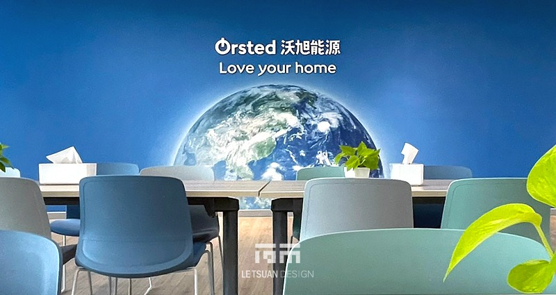
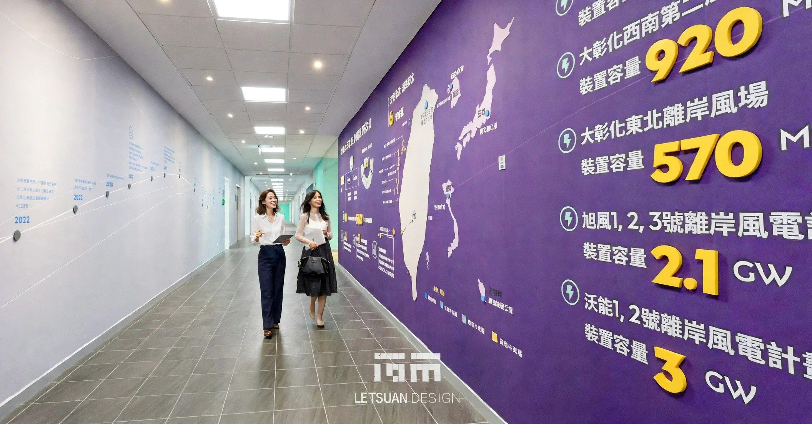
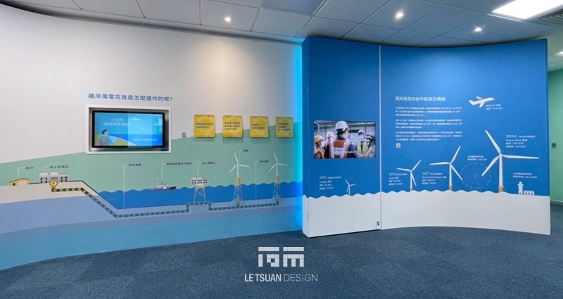
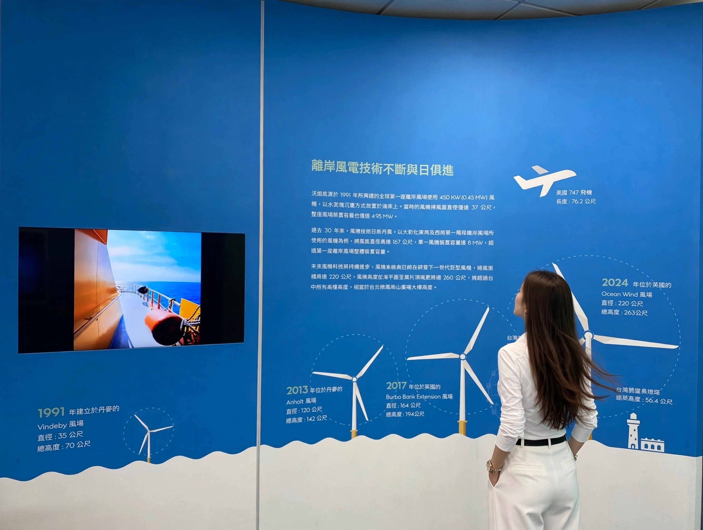
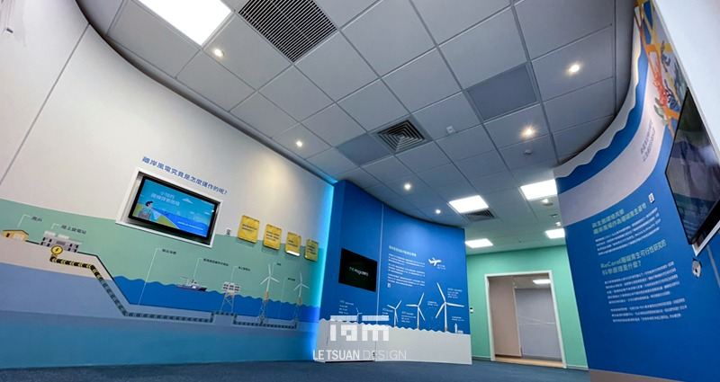
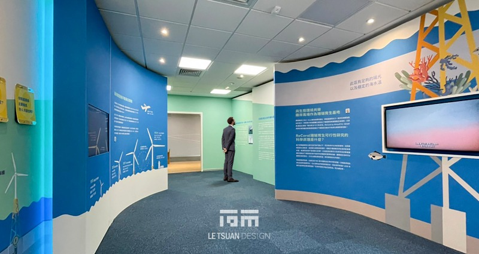
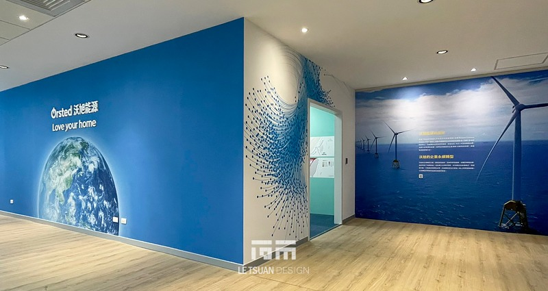
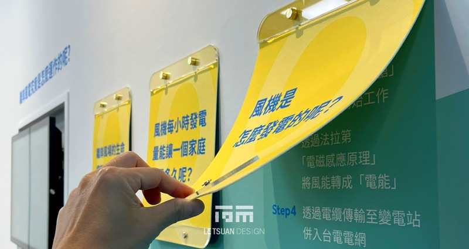
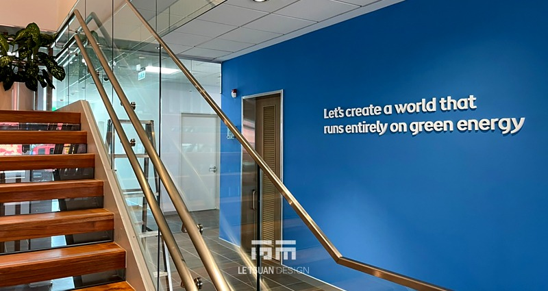

Offshore Wind O&M Building Learning Center Decorating Modifications
CLIENT
Ørsted
LOCATION
Taichung, Taiwan
YEAR
2022–Present
CATEGORY
Curatorial Project, Exhibition Design, Interior Design, Graphic Design, Visual Design, Construction
Turning Idle Corridors Into a Learning Center
By reclaiming corridors and underutilized areas within the existing building, we redefined circulation and function, transforming a low-utilization space that had previously served only as a staff dining area into a multi-purpose learning center that integrates training, brand storytelling, and visitor reception. The renovation used sustainable materials throughout, in keeping with the building's LEED certification.
Existing Conditions
The original space saw concentrated, single-purpose use limited to specific hours. Elsewhere in the building, corridors and scattered leftover areas remained poorly utilized, lacking circulation planning and serving neither corporate image nor training functions.
Design Strategy
Working within the existing structure, we consolidated the previously dispersed learning center resources into the main space through selective partitioning and functional reorganization. Corridors and residual areas were folded into the plan as well, transformed into a continuous brand-storytelling circulation path, with a branded photo wall installed at a key node so the space itself becomes a complete brand communication interface. Sustainable materials were used throughout the renovation, aligning the interior fit-out with the building's LEED certification and keeping the interior consistent with the building's broader sustainability positioning.
Exhibition Narrative
Along the circulation path, the narrative unfolds Ørsted's corporate history, its investment footprint in Taiwan's wind farms, Taiwan's world-class wind resource advantages, Ørsted's global presence, its environmental sustainability commitments, and the current status of wind power deployment, before arriving at a branded photo wall where visitors can capture a keepsake image bearing the company's identity.
Functional Program
The space accommodates corporate image display, policy communication, employee training, presentations, remote conferencing, client reception, and group visits, flexibly supporting both small internal courses and external guided tours.
Outcomes
The formerly idle space and corridors were reconfigured into a high-frequency, narratively rich multi-purpose venue. Overall spatial efficiency improved, along with both internal training capacity and external reception capability. The sustainable materials echo the building's LEED certification and carry Ørsted's core commitment to environmental sustainability through from function to material selection.
RELATED PROJECTS








